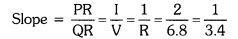
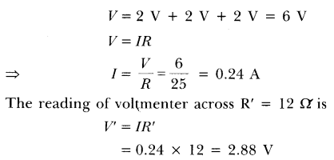
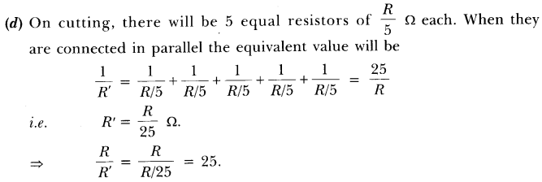
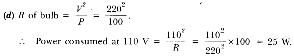
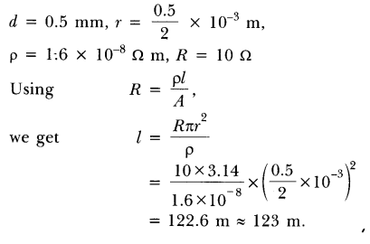
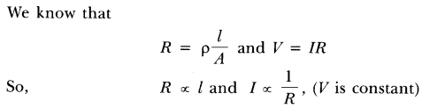
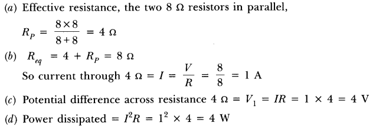

NCERT Solutions For Class 10 Science Chapter 12 Electricity: In this article, we will provide you all the necessary information regarding NCERT solutions for class 10 science physics chapter 12 electricity. Working on CBSE class 10 physics electricity questions and answers will help candidates to score good marks in-class tests as well as in the CBSE Class 10 board exam.
Electricity class 10 NCERT solutions will not only help in board exam preparation but also helps in clearing the competitive exams like Engineering. Also, candidates can find electricity class 10 numericals with solutions which helps candidates solving their assignments. Read on to find out everything NCERT Solutions For Class 10 Science Chapter 12 Electricity.
NCERT Solutions for Class 10 Science Chapter 12 Electricity
Before getting into the details of NCERT Solutions For Class 10 Science Chapter 12 Electricity, let’s have an overview of the list of topics and subtopics under Electricity class 10 NCERT solutions:
- Electricity
- Electric Current And Circuit
- Electric Potential And Potential Difference
- Circuit Diagram
- Ohm’S Law
- Factors On Which The Resistance Of A Conductor Depends
- Resistance Of A System Of Resistors
- Heating Effect Of Electric Current
- Electric Power
Free download NCERT Solutions for Class 10 Science Chapter 12 Electricity PDF in Hindi Medium as well as in English Medium for CBSE, Uttarakhand, Bihar, MP Board, Gujarat Board, and UP Board students, who are using NCERT Books based on updated CBSE Syllabus for the session 2019-20.
- विद्युत कक्षा 10 विज्ञान हिंदी में
- Class 10 Electricity Important Questions
- Electricity Class 10 Notes
- Electricity NCERT Exemplar Solutions
- Class 10 Science Electricity Mind Map
NCERT Solutions for Class 10 Science Chapter 12 Intext Questions
Page Number: 200
Question 1
What does an electric circuit mean ?
Answer:
A continuous and closed path along which an electric current flows is called an electric circuit.
Question 2
Define the unit of current.
Answer:
Unit of current is ampere. If one coulomb of charge flows through any section of a conductor in one second then the current through it is said to be one ampere.
I = \(\frac { Q }{ t }\) or 1 A = I C s-1
Question 3
Calculate the number of electrons constituting one coulomb of charge.
Answer:
Charge on one electron, e = 1.6 x 10-19 C
Total charge, Q = 1 C
Number of electrons, n = \(\frac { Q }{ e }\) = \(\frac { 1C }{ 1.6x{ 10 }^{ -19 } }\) = 6.25 x 1018
Page Number: 202
Question 1
Name a device that helps to maintain a potential difference across a conductor.
Answer:
A battery.
Question 2
What is meant by saying that the potential difference between two points is IV?
Answer:
The potential difference between two points is said to be 1 volt if 1 joule of work is done in moving 1 coulomb of electric charge from one point to the other.
Question 3
How much energy is given to each coulomb of charge passing through a 6 V battery ?
Answer:
Energy given by battery = charge x potential difference
or W = QV = 1C X 6V = 6J.
Page Number: 209
Question 1
On what factors does the resistance of a conductor depend ?
OR
List the factors on which the resistance of a conductor in the shape of a wire depends. [CBSE2018]
Answer:
The resistance of a conductor depends (i) on its length (ii) on its area of cross-section and (iii) on the nature of its material.
Question 2
Will current flow more easily through a thick wire or a thin wire of the same material, when connected to the same source ? Why ?
Answer:
The current will flow more easily through a thick wire than a thin wire of the same material. Larger the area of cross-section of a conductor, more is the ease with which the electrons can move through the conductor. Therefore, smaller is the resistance of the conductor.
Question 3
Let the resistance of an electrical component remains constant while the potential difference across the two ends of the component decreases to half of its former value. What change will occur in the current through it ?
Answer:
When potential difference is halved, the current through the component also decreases to half of its initial value. This is according to ohm’s law i.e., V ∝ I.
Question 4
Why are coils of electric toasters and electric irons are made of an-alloy rather than a pure metal ?
OR
Why are alloys commonly used in electric heating devices? Given reason. [CBSE 2018]
Answer:
The coils of electric toasters, electric irons and other heating devices are made of an alloy rather than a pure metal because (i) the resistivity of an alloy is much higher than that of a pure metal, and (ii) an alloy does not undergo oxidation (or burn) easily even at high temperature, when it is red hot.
Question 5
Use the data in Table 12.2 (in NCERT Book on Page No. 207) to answer the following :
(i) Which among iron and mercury is a better conductor ?
(ii) Which material is the best conductor ?
Answer:
(i) Resistivity of iron = 10.0 x 10-8 Ω m
Resistivity of mercury = 94.0 x 10-8 Ω m.
Thus iron is a better conductor because it has lower resistivity than mercury.
(ii) Because silver has the lowest resistivity (= 1.60 x 10-8 Ω m), therefore silver is the best conductor.
Page Number: 213
Question 1
Draw a schematic diagram of a circuit consisting of a battery of three cells of 2 V each, a 5Ω resistor, an 8 Ω resistor, and a 12 Ω resistor, and a plug key, all connected in series.
Answer:
The required circuit diagram is shown below :
Question 2
Redraw the circuit of Questions 1, putting in an ammeter to measure the current through the resistors and a voltmeter to measure the potential difference across the 12 Ω resistor. What would be the readings in the ammeter and the voltmeter ?
Solution:
The required circuit diagram is shown on the right.
Total voltage, V = 3 x 2 = 6V
Total resistance, R = 5Ω + 8Ω + 12Ω = 25Ω
Page Number: 216
Question 1
Judge the equivalent resistance when the following are connected in parallel :
(i) 1 Ω and 106 Ω,
(if) 1 Ω and 103 Ω and 106 Ω.
Answer:
When the resistances are connected in parallel, the equivalent resistance is smaller than the smallest individual resistance.
(i) Equivalent resistance < 1 Ω.
(ii) Equivalent resistance < 1 Ω.
Question 2
An electric lamp of 100 Ω, a toaster of resistance 50 Ω, and a water filter of resistance 500 Ω are connected in parallel to a 220 V source. What is the resistance of an electric iron connected to the same source that takes as much current as all three appliances, and what is the current through it ?
Solution:
Resistance of electric lamp, R1 = 100 Ω
Resistance of toaster, R2 = 50 Ω
Resistance of water filter, R3 = 500 Ω
Equivalent resistance Rp of the three appliances connected in parallel, is
Resistance of electric iron = Equivalent resistance of the three appliances connected in parallel = 31.25 Ω
Applied voltage, V = 220 V
Current, I = \(\frac { V }{ R }\) = \(\frac { 220V }{ 31.25\Omega }\)
Question 3
What are the advantages of connecting electrical devices in parallel with the battery instead of connecting them in series ?
Answer:
Advantages of connecting electrical devices in parallel with the battery are :
- In parallel circuits, if an electrical appliance stops working due to some defect, then all other appliances keep working normally.
- In parallel circuits, each electrical appliance has its own switch due to which it can be turned on turned off independently, without affecting other appliances.
- In parallel circuits, each electrical appliance gets the same voltage (220 V) as that of the power supply line.
- In the parallel connection of electrical appliances, the overall resistance of the household circuit is reduced due to which the current from the power supply is high.
Question 4
How can three resistors of resistances 2Ω, 3 Ω, and 6Ω be connected to give a total resistance of (i) 4 Ω, (ii) 1 Ω ?
Solution:
(i) We can get a total resistance of 4Ω by connecting the 2Ω resistance in series with the parallel combination of 3Ω and 6Ω.
(ii) We can obtain a total resistance of 1Ω by connecting resistors of 2 Ω, 3 Ω and 6 Ω in parallel.
Question 5
What is (i) the highest, (ii) the lowest total resistance that can be secured by combinations of four coils of resistance 4 Ω, 8 Ω, 12 Ω, 24 Ω?
Solution:
(i) Highest resistance can be obtained by connecting the four coils in series.
Then, R = 4Ω + 8Ω + 12Ω + 24Ω = 48Ω
(ii) Lowest resistance can be obtained by connecting the four coils in parallel.
Page Number: 218
Question 1
Why does the cord of an electric heater not glow while the heating element does ?
Solution:
Heat generated in a circuit is given by I2R t. The heating element of an electric heater made of nichrome glows because it becomes red-hot due to the large amount of heat produced on passing current because of its high resistance, but the cord of the electric heater made of copper does not glow because negligible heat is produced in it by passing current because of its extremely low resistance.
Question 2
Compute the heat generated while transferring 96000 coulomb of charge in one hour through a potential difference of 50 V.
Solution:
Here, Q = 96,000 C, t =1 hour = 1 x 60 x 60 sec = 3,600 s, V = 50 V
Heat generated, H = VQ = 50Vx 96,000 C = 48,00,000 J = 4.8 x 106 J
Question 3
An electric iron of resistance 20Ω takes a current of 5 A. Calculate the heat developed in 30 s.
Solution:
Here, R = 20 Ω, i = 5 A, t = 3s
Heat developed, H = I2 R t = 25 x 20 x 30 = 15,000 J = 1.5 x 104 J
Page Number: 220
Question 1
What determines the rate at which energy is delivered by a current ?
Answer:
Resistance of the circuit determines the rate at which energy is delivered by a current.
Question 2
An electric motor takes 5 A from a 220 V line. Determine the power of the motor and the energy consumed in 2 h.
Answer:
Here, I = 5 A, V = 220 V, t = 2h = 7,200 s
Power, P = V I = 220 x 5 = 1100 W
Energy consumed = P x t = 100 W x 7200 s = 7,20,000 J = 7.2 x 105 J
NCERT Solutions for Class 10 Science Chapter 12 Textbook Chapter End Questions
Question 1
A piece of wire of resistance R is cut into five equal parts. These parts are then connected in parallel. If the equivalent resistance of this combination is R’, then the ratio R/R’ is :
(a) \(\frac { 1 }{ 25 }\)
(b) \(\frac { 1 }{ 5 }\)
(c) 5
(d) 25
Answer:
(d) 25
Question 2
Which of the following terms does not represent electrical power in a circuit?
(a) I2R
(b) IR2
(c) VI
(d) \(\frac { { v }^{ 2 } }{ 2 }\)
Answer:
(fa) IR2
Question 3
An electric bulb is rated 220 V and 100 W. When it is operated on 110 V, the power consumed will be :
(a) 100 W
(b) 75 W
(c) 50 W
(d) 25 W
Answer:
(d) 25 W
Question 4
Two conducting wires of the same material and of equal lengths and equal diameters are first connected in series and then parallel in a circuit across the same potential difference. The ratio of heat produced in series and parallel combinations would be :
(a) 1 : 2
(b) 2 : 1
(c) 1 : 4
(d) 4 : 1
Answer:
(c) 1 : 4
Question 5
How is a voltmeter connected in the circuit to measure the potential difference between two points ?
Answer:
A voltmeter is connected in parallel to measure the potential difference between two points.
Question 6
A copper wire has diameter 0.5 mm and resistivity of 1.6 x 10-8 Ω m. What will be the length of this wire to make its resistance 10 Ω ? How much does the resistance change if the diameter is doubled ?
Answer:
If a wire of diameter doubled to it is taken, then area of cross-section becomes four times.
New resistance = \(\frac { 10 }{ 2 }\) = 2.5 Ω, Thus the new resistance will be \(\frac { 1 }{ 4 }\) times.
Decrease in resistance = (10 – 2.5) Ω = 7.5 Ω
Question 7
The values of current I flowing in a given resistor for the corresponding values of potential difference V across the resistor are given below :
Plot a graph between V and I and calculate the resistance of the resistor.
Solution:
The graph between V and I for the above data is given below.
The slope of the graph will give the value of resistance.
Let us consider two points P and Q on the graph.
and from P along Y-axis, which meet at point R.
Now, QR = 10.2V – 34V = 6.8V
And PR = 3 – 1 = 2 ampere

Thus, resistance, R = 3.4 Ω
Question 8
When a 12 V battery is connected across an unknown resistor, there is a current of 2.5 mA in the circuit. Find the value of the resistance of the resistor.
Solution:
Here, V = 12 V and I = 2.5 mA = 2.5 x 10-3 A
∴ Resistance, R = \(\frac { V }{ I }\) = \(\frac { 12V }{ 2.5\times { 10 }^{ 3 }A }\) = 4,800 Ω = 4.8 x 10-3 Ω
Question 9
A battery of 9V is connected in series with resistors of 0.2 O, 0.3 O, 0.4 Q, 0.5 Q and 12 £1, respectively. How much current would flow through the 12 Q resistor?
Solution:
Total resistance, R = 0.2 Ω + 0.3 Ω + 0.4 Ω + 0.5 Ω + 12 Ω – 13.4 Ω
Potential difference, V = 9 V
Current through the series circuit, I = \(\frac { V }{ R }\) = \(\frac { 12V }{ 13.4\Omega }\) = 0.67 A
∵ There is no division of current in series. Therefore current through 12 Ω resistor = 0.67 A.
Question 10
How many 176 Ω resistors (in parallel) are required to carry 5 A on a 220 V line? [CBSE (Delhi) 2013]
Solution:
Suppose n resistors of 176 Ω are connected in parallel.
Thus 4 resistors are needed to be connect.
Question 11
Show how you would connect three resistors, each of resistance 6 Ω, so that the combination has a resistance of (i) 9 Ω, (ii) 4Ω
Solution:
Here, R1 = R2 = R3 = 6 Ω.
(i) When we connect R1 in series with the parallel combination of R2 and R3 as shown in Fig. (a).
The equivalent resistance is
(ii) When we connect a series combination of R1 and R2 in parallel with R3, as shown in Fig. (b), the equivalent resistance is
Question 12
Several electric bulbs designed to be used on a 220 V electric supply line, are rated 10 W. How many lamps can be connected in parallel with each other across the two wires of 220 V line if the maximum allowable current is 5 A ?
Solution:
Here, current, I = 5 A, voltage, V = 220 V
∴ Maxium power, P = I x V = 5 x 220 = 1100W
Required no. of lamps \( =\frac { Max.Power }{ Power\quad of\quad 1\quad lamp } \quad =\quad \frac { 1100 }{ 10 } =110\)
∴ 110 lamps can be connected in parallel.
Question 13
A hot plate of an electric oven connected to a 220 V line has two resistance coils A and B, each of 24 Ω resistance, which may be used separately, in series, or in parallel. What are the currents in the three cases ?
Solution:
(i) When the two coils A and B are used separately. R = 24 Ω, V = 220 V
(ii) When the two coils are connected in series,
(iii) When the two coils are connected in parallel.
Question 14
Compare the power used in the 2 Ω resistor in each of the following circuits
(i) a 6 V battery in series with 1 Ω and 2 Ω resistors, and
(ii) a 4 V battery in parallel with 12 Ω and 2 Ω resistors.
Solution:
(i) The circuit diagram is shown in figure.
Total resistance, R = 1Ω + 2Ω = 3Ω
Potential difference, V = 6 V
Power used in 2Ω resistor = I2R = (2)2 x 2 = 8 W
(ii) The circuit diagram for this case is shown :
Power used in 2 resistor = \(\frac { { v }^{ 2 } }{ R }\) =\(\frac { { 4 }^{ 2 } }{ 2 }\) = 8 W.
[ ∵ Current is different for different resistors in parallel combination.]
Question 15
Two lamps, one rated 100 W at 220 V, and the other 60 W at 220 V, are connected in parallel to electric mains supply. What current is drawn from the line if the supply voltage is 220 V ? [CBSE 2018]
Solution:
Power of first lamp (P1) = 100 W
Potential difference (V) = 220 V
Question 16
Which uses more energy, a 250 W TV set in 1 hr, or a 1200 W toaster in 10 minutes ?
Solution:
Energy used by 250 W TV set in 1 hour = 250 W x 1 h = 250 Wh
Energy used by 1200 W toaster in 10 minutes = 1200 W x 10 min
= 1200 x \(\frac { 10 }{ 60 }\) = 200 Wh 60
Thus, the TV set uses more energy than the toaster.
Question 17
An electric heater of resistance 8 Ω draws 15 A from the service mains 2 hours. Calculate the rate at which heat is developed in the heater.
Solution:
Here, R = 8 Ω, 1 = 15 A, t = 2 h
The rate at which heat is developed in the heater is equal to the power.
Therefore, P = I2 R = (15)2 x 8 = 1800 Js-1
Question 18
Explain the following:
(i) Why is tungsten used almost exclusively for filament of electric lamps ?
(ii) Why are the conductors of electric heating devices, such as bread-toasters and electric irons, made of an alloy rather than a pure metal ?
(in) Why is the series arrangement not used for domestic circuits ?
(iv) How does the resistance of a wire vary with its area of cross-section ?
(v) Why are copper and aluminium wires usually employed for electricity transmission?
Answer:
(i) The tungsten is used almost exclusively for filament of electric lamps because it has a very high melting point (3300°C). On passing electricity through tungsten filament, its temperature reaches to 2700°C and it gives heat and light energy without being melted.
(ii) The conductors of electric heating devices such as bread-toasters and electric irons, are made of an alloy rather than a pure metal because the resistivity of an alloy is much higher than that of pure metal and an alloy does not undergo oxidation (or burn) easily even at high temperature.
(iii) The series arrangement is not used for domestic circuits because in series circuit, if one electrical appliance stops working due to some defect, than all other appliances also stop working because the whole circuit is broken.
(iv) The resistance of a wire is inversely proportional to its area of cross-section, i.e., Resistance R ∝ (1/πr2). If the area of cross section of a conductor of fixed length is increased, then resistance decreases because there are more free electrons for movement in conductor.
(v) Copper and aluminium wires usually employed for electricity transmission because they have very low resistances. So, they do not become too hot on passing electric current.
NCERT Solutions for Class 10 Science Chapter 12 Electricity
Electric current, potential difference and electric current, Ohms law, Resistance, Resistivity factors on which the resistance of a conductor depends; Series combination of resistors, parallel combination of resistors; and its application on daily life; Heating effect of Electric current, electric Power, Interrelation between P, V, and R.
| Board | CBSE |
| Textbook | NCERT |
| Class | Class 10 |
| Subject | Science |
| Chapter | Chapter 12 |
| Chapter Name | Electricity |
| Number of Questions Solved | 41 |
| Category | NCERT Solutions |
Formulae Handbook for Class 10 Maths and Science
Page 200
What does an electric circuit mean?
Electric circuit is a continuous and closed path made of conducting wires, through which the electric current flows. It comprises a cell, ammeter, voltmeter, plug key, etc.
Define the unit of current.
SI unit of electric current is ampere (A).
Ampere is the flow of electric charges through an area at the rate of one coulomb per second, i.e. if 1 coulomb of electric charge flows through a cross-section of wire for 1 second, then it would be equal to 1 ampere.

Page 202
Question 1:
Name a device that helps to maintain a potential difference across a conductor.
Answer:
Cell or battery eliminator.
Question 2:
What is meant by saying that the potential difference between two points is 1 V?
Answer:
As we know that V = W / q
Thus, the potential difference between two points is one volt when one joule of work is done to carry a charge of one coulomb between the two points in the electric field.
More Resources for CBSE Class 10
- NCERT Solutions
- NCERT Solutions for Class 10 Science
- NCERT Solutions for Class 10 Maths
- NCERT Solutions for Class 10 Social
- NCERT Solutions for Class 10 English
- NCERT Solutions for Class 10 Hindi
- NCERT Solutions for Class 10 Sanskrit
- NCERT Solutions for Class 10 Foundation of IT
- RD Sharma Class 10 Solutions
Question 3:
How much energy is given to one coulomb of charge passing through a 6 V battery
Answer:
Page 209
Question 1:
On what factors does the resistance of a conductor depend
Answer:
Resistance of a conductor depends upon:
(i) Resistivity of the material.
(ii) Length of the conductor.
(iii) Cross-sectional area of the conductor.
Question 2:
Will current flow more easily through a thick wire or thin wire of the same material when connected to the same source? Why
Answer:
The current flows more easily through a thick wire than through a thin wire because the resistance of thick wire is less than that of a thin wire as R ∝ 1/A.
Download NCERT Solutions for Class 10 Science Chapter 12 Electricity PDF
Question 3:
Let the resistance of an electrical component remains constant while the potential difference across the two ends of the component decreases to half of its former value. What change will occur in the current through it?
Answer:
Hence, the current through an electrical component also becomes half of its previous value.
Question 4:
Why are the coils of electric toasters and electric irons made of an alloy rather than a pure metal
Answer:
The coils of electric toaster and electric iron are made of an alloy rather than a pure metal because of the following reasons;
(i) The resistivity of an alloy is higher than that of a pure metal.
(ii) It has high melting point and does not oxidise.
Question 5:
Use the data in Table 12.2 of NCERT book to answer the following:
(a) Which among iron and mercury is a better conductor?
(b) Which material is the best conductor? ‘
Answer:
(a) Iron because its resistivity is less than mercury.
(b) Silver is the best conductor as it has least resistivity.
Page 213
Question 1:
Draw a schematic diagram of a circuit consisting of a battery of three cells of 2 V each, a 5 Ω resistor, a 8 Ω resistor and a 12 Ω resistor and a plug key, all connected in series.
Answer:
Question 2:
Redraw the circuit of the above question, putting in an ammeter to measure the current through the resistors and a voltmeter to measure the voltage across the 12 resistor. What would be the reading in the ammeter and the voltmeter?
Answer:
Total resistance of the circuit = R
Since all the three resistors are connected in series, so, the equivalent resistance R is equal to the sum of all resistance.
R = 5 Ω + 8 Ω + 12 Ω = 25 Ω

Page 216
Question 1:
Judge the equivalent resistance when the following are connected in parallel.
(a) 1 Ω and 106 Ω
(b) 1 Ω , 103 Ω and 106 Ω
Answer:
Equivalent resistance in parallel combination of resistors is always less than the least resistance of any resistor in the circuit.
Hence, in both the given cases, the equivalent resistance is less than 1 Ω.
Question 2:
An electric lamp of 100 Ω, a toaster of resistance 50 Ω and a water filter of resistance 500 Ω are connected in parallel to a 220 V source. What is the resistance of an electric iron connected to the same source that takes as much current as all three appliances and what is the current flows through it?
Answer:

Question 3:
What are the advantages of connecting electrical devices in parallel with the battery instead of connecting them in series ?
Answer:
Advantages of connecting electrical devices in parallel:
- When the appliances are connected in parallel with the battery, each appliance gets the same potential difference as that-of battery which is not possible in series connection.
- Each appliance has different resistances and requires different currents to operate properly. This is possible only in parallel connection, as in series connection, same current flows through all devices, irrespective of their resistances.
- If one appliance fails to work, other will continue to work properly.
Question 4:
How can three resistors of resistances 2 Ω, 3 Ω and 6 Ω be connected to give a total resistance of (a) 4 Ω (b) 1 Ω?
Answer:
(a) In order to get 4 Ω, resistance 2 Ω should be connected in series with the parallel combination of 3 Ω and 6 Ω.
Question 5:
What is (a) the highest (b) the lowest total resistance that can be secured by combination of four coils of resistances 4 Ω, 8 Ω, 12 Ω, 24 Ω?
Answer:
(a) The highest resistance is secured by combining all four coils of resistance in series.
Rs = 4 Ω+ 8 Ω + 12 Ω + 24 Ω = 48 Ω
(b) The lowest resistance is secured by combining all four coils of resistance in parallel.
Page 218
Question 1:
Why does the cord of an electric heater not glow while the heating element does?
Answer:
The cord of an electric heater is made up of metallic wire such as copper or aluminum which has low resistance while the heating element is made up of an alloy which has more resistance than its constituent metals. Also heat produced ‘H’ is
H = I2Rt
Thus, for the same current H oc R, so for more resistance, more heat is produced by heating element and it glows.
Question 2:
Compute the heat generated while transferring 96000 C of charge in one hour through a potential difference of 50 V.
Answer:

Question 3:
An electric iron of resistance 20 Q takes a current of 5 A. Calculate the heat developed in 30 s.
Answer:
Given R = 20 Ω, I = 5 A, t = 30 s
H = I2Rt = (5)2 x 20 x 30 = 15000 J = 1.5 x 104 J
Page 220
Question 1:
What determines the rate at which energy is delivered by a current?
Answer:
Electric power determines the rate at which energy is delivered by a current.
Question 2:
An electric motor takes 5 A from a 220 V line. Determine the power of the motor and the energy consumed in 2 h.
Answer:
Given I = 5 A, V = 220 V, t = 2 h Power,
p = VI = 220 x 5 = 1100 W
Energy consumed = Vlt = Pt
= 1100 x 2 = 2200 Wh
Textbook Questions
Question 1:
A piece of wire of resistance R is cut into five equal parts. These parts are then connected in parallel. If the equivalent resistance of this combination is R’, then the ratio R/R’ is
Answer:

Question 2:
Which of the following terms does not represent electrical power in a circuit?
(a) I2R
(b) IR2
(c) VI
(d) V2/R
Answer:
(b) P = V2/R = I2R = VI Option (b) does not represent electrical power.
Question 3:
An electric bulb is rated 220 V and 100 W. When it is operated on 110 V, the power consumed will be
(a) 100 W
(b) 75 W
(c) 50 W
(d) 25 W
Answer:

Question 4:
Two conducting wires of same material and of equal lengths and diameters are first connected in series and then parallel in a circuit across the same potential difference. The ratio of heat produced in series and parallel combinations would be
(a) 1:2
(b) 2:1
(c) 1:4
(d) 4:1
Answer:
Question 5:
How is a voltmeter connected in the circuit to measure the potential difference between two points?
Answer:
A voltmeter is connected in parallel across any two points in a circuit to measure the potential difference between them with its +ve terminal to the point at higher potential and -ve terminal to the point at lower potential of the source.
Question 6:
A copper wire has a diameter 0.5 mm and resistivity of 1.6 X 10-8 Ωm. What will be the length of this wire to make its resistance 10 Ω? How much does the resistance change if the diameter is doubled?
Answer:

Question 7:
The values of the current I flowing in a given resistor for the corresponding values of potential difference V across the resistor are given below:

Plot a graph between V and I and calculate the resistance of that resistor.
Answer:
Question 8:
When a 12 V battery is connected across an unknown resistor, there is a current of 2.5 mA in the circuit. Find the value of the resistance of the resistor.
Answer:
Question 9:
A battery of 9 V is connected in series with resistors of 0.2 Ω, 0.3 Ω, 0.4 Ω, 0.5 Ω and 12 Ω, respectively. How much current would flow through the 12 Ω resistor?
Answer:
Since all the resistors are in series, the same current, 0.67 A flows through the 12 Ω resistor.
Question 10:
How many 176 Ω resistors (in parallel) are required to carry 5 A on a 220 V line?
Answer:
Question 11:
Show how you would connect three resistors, each of resistance 6 Ω , so that the combination has a resistance of (i) 9 Ω , (it) 4 Ω .
Answer:
(i) When two 6 Ω resistances are in parallel and the third is in combination to this, the equivalent resistance will be 9 Ω.
(ii) When two 6 Ω resistances are in series and the third is in parallel to them, then it will be 4 Ω.
Question 12:
Several electric bulbs designed to be used on a 220 V electric supply line, are rated 10 W. How many lamps can be connected in parallel with each other across the two wires of 220 V line if the maximum allowable current is 5 A?
Answer:
Since, N bulbs of power P each connected in parallel will make the total power of NP,
Question 13:
A hot plate of an electric oven connected to 220 V line has two resistance coils A and B, each of 24 Q resistance, which may be used separately, in series, or in parallel. What are the currents in the three cases?
Answer:
Question 14:
Compare the power used in the 2 Ω resistor in each of the following circuits.
(i) a 6 V battery in series with 1 Ω and 2 Ω resistors, and
(ii) a 4 V battery in parallel with 12 Ω and 2 Ω resistors.
Answer:
Question 15:
Two lamps, one rated 100 W at 220 V, and the other 60 W at 220 V, are connected in parallel to electric mains supply. What current is drawn from the line if the supply voltage is 220 V?
Answer:
Question 16:
Which uses more energy, a 250 W TV set in 1 hr, or a 1200 W toaster in 10 minutes?
Answer:
Energy consumed by 250 W TV set in 1 h = 250 x 1 = 250 Wh.
Energy consumed by 1200 W toaster in 10 min = 1200 X 1/6 = 200 Wh.
∴ Energy consumed by TV set is more than the energy consumed by toaster in the given timings.
Question 17:
An electric heater of resistance 8 f2 draws 15 A from the service mains 2 hours. Calculate the rate at which heat is developed in the heater.
Answer:
Question 18:
Explain the following.
(a) Why is the tungsten used almost exclusively for filament of electric lamps?
(b) Why are the conductors of electric heating devices, such as bread-toasters and electric irons, made of an alloy rather than a pure metal?
(c) Why is the series arrangement not used for domestic circuits?
(d) How does the resistance of a wire vary with its area of cross-section?
(e) Why are copper and aluminum wires usually employed for electricity transmission?
Answer:
(a) It has high melting point and emits light at a high temperature.
(b) It has more resistivity and less temperature coefficient of resistance.
(c) (i) All appliances do not get same potential in series arrangement.
(ii) All appliances cannot be individually operated.
(d) R ∝ =1 / Area of cross – section.
(e) They are very good conductors of electricity.
Short Answer Type Questions
Question 1:
Three 2 Ω resistors, A, B and C are connected as shown in figure. Each of them dissipates energy and can withstand a maximum power of 18 W without melting. Find the maximum current that can flow through the three resistors.
Answer:
Question 2:
Should the resistance of an ammeter be low or high? Give reason.
Answer:
The resistance of an ammeter should be low so that it will not disturb the magnitude of current flowing through the circuit when connected in series in a circuit.
Question 3:
How does use of a fuse wire protect electrical appliances?
Answer:
The fuse wire is always connected in series with the live wire or electrical devices. If the flow of current exceeds the specified preset value due to some reason, the heat produced melts it and disconnects the circuit or the device from the mains. In this way, fuse wire protects the electrical appliances.
Question 4:
What is electrical resistivity? In a series electrical circuit comprising a resistor made up of a metallic wire, the ammeter reads 5 A. The reading of the ammeter decreases to half when the length of the wire is doubled. Why?
Answer:
The resistance offered by a metallic wire of unit length and unit cross-sectional area is called electrical resistivity.

Hence, when the length of wire is doubled, the resistance becomes double and current decreases to half.
Question 5:
A current of 1 ampere flows in a series circuit containing an electric lamp and a conductor of 5 Ω when connected to a 10 V battery. Calculate the resistance of the electric lamp.
Now if a resistance of 10 Ω is connected in parallel with this series combination, what change (if any) in current flowing through 5 Ω conductor and potential difference across the lamp will take place? Give reason.
Answer:
Question 6:
Why is parallel arrangement used in domestic wiring?
Answer:
Parallel arrangement is used in domestic wiring because
(i) Each appliance gets the same voltage as that of the mains supply.
(ii) If one component is switched off, others can work properly.
(iii) Fault in any branch of the circuit can be easily identified.
Question 7:
B1, B2 and B3 are three identical bulbs connected as shown in figure. When all the three bulbs glow, a current of 3A is recorded by the ammeter A.
(i) What happens to the glow of the other two bulbs when the bulb B j gets fused?
(ii) What happens to the reading of A1 ,A2 , A3 and A when the bulb B2 gets fused?
(iii) How much power is dissipated in the circuit when all the three bulbs glow together?
Answer:
(i) Since B1 ,B2 and B3 are in parallel, the potential difference across each of them will remain same. So when the bulb B1 gets fused, B2 and B3 have the same potential and continues with the same energy dissipated per second, i.e. they will glow continuously as they were glowing before.
Long Answer Type Questions
Question 1:
Three incandescent bulbs of 100 W each are connected in series in an electric circuit. In another circuit, another set of three bulbs of the same wattage are connected in parallel to the same source.
(а) Will the bulb in the two circuits glow with the same brightness? Justify your answer.
(b) Now let one bulb in both the circuits get fused. Will the rest of the bulbs continue to glow in each circuit? Give reason.
Answer:
(a) The bulbs in the two circuits will not glow equally bright as the current through them is not the same.
(b) As one bulb fuses, the other bulbs in the series circuit will not glow because the circuit becomes an open circuit. While the rest of bulbs in parallel circuit will continue to glow without getting disturbed because in parallel combination, current gets additional paths to flow.
Question 2:
Find out the following in the electric circuit given in figure:
Answer:

(e) No difference, since the ammeters are connected in series and same current will pass through them, so reading of both ammeters will be same.
Multiple Choice Questions (MCQs) [1 Mark each]
Question 1.
To determine the equivalent resistance of two resistors when connected in series, a student arranged the circuit components as shown in the diagram. But he did not succeed to achieve the objective. [CCE 2010]
Which of the following mistakes has been committed by him in setting up the circuit?
(a) Position of ammeter is incorrect
(b) Position of voltmeter is incorrect
(c) Terminals of ammeter are wrongly connected
(d) Terminals of voltmeter are wrongly connected
Answer:
(c) Because positive terminal of ammeter must be connected with positive terminal of cell and negative terminal of an ammeter must be connected to negative terminal of a cell.
Question 2.
For the given circuit, name the components which are connected in parallel. [CCE 2011]
(a) R1 and R2
(b) R1, R2 and V
(c) R2 and V
(d) R1 and V
Answer:
(b) The components R1, R2 and V are connected in parallel combination. Because terminals of the resistance and voltmeter are connected together.
Question 3.
A student arranges the following circuit to get equivalent resistance of a series combination of two resistors R1 and R2.
Which one of the following statements will be true for this circuit [CCE 2007]
(a) It gives incorrect reading for current I as well as potential difference V
(b) It gives correct reading for current I but incorrect reading for potential difference V
(c) It gives correct reading for potential difference V but incorrect reading for current I
(d) It gives correct reading for both I and V
Answer:
(b) The voltmeter should be connected across the components of and R2 to give correct reading for potential difference.
Question 4.
An ammeter has 20 divisions between 0 mark and 2A mark on its scale. The least count of ammeter is
(a) 0.01A
(b) 0.2A
(c) 0.1A
(d) 1A
Answer:
(c) Number of divisions = 20
Maximum reading of ammeter = 2 A
Least count of ammeter = 2/20 = 1/10 = 0.1 A
Question 5.
A student finds that there are 20 divisions between zero mark and 1V mark of a voltmeter. The least count of voltmeter is
(a) 0.1 V
(b) 0.01 V
(c) 0.05 V
(d) 1.0 V
Answer:
(c) Number of divisions = 20
Maximum reading of the voltmeter = 1 V
Least count of voltmeter = 1/20 = 0.05 V
Question 6.
The current flowing through a resistor connected in an electric circuit and the potential difference applied across its ends are shown in figure alongside.
The value of the resistance of the resistor is [CCE2013]
(a) 1 Ω
(b) 5 Ω
(c) 8 Ω
(d) 10 Ω
Answer:
(d) Reading from ammeter (7) = 180 mA= 0.18 A,
reading from voltmeter (V) = 1.8 V
Resistance of the resistor R = V/I = 1.8/0.18 = 180/18 = 10Ω
Question 7.
Which of the following is the correct method to connect the ammeter and voltmeter with resistance in the circuit to verify Ohm’s law? [CCE 2012]
(a) Ammeter and voltmeter in series
(b) Ammeter in series and voltmeter in parallel
(c) Ammeter in parallel and voltmeter in series
(d) Ammeter and voltmeter in parallel
Answer:
(b) In a circuit, ammeter should be connected in series, while voltmeter in parallel.
Question 8.
In an experiment on studying the dependence of the current I flowing through a given resistor on the potential difference V applied across it, a student has to change the value of the current. For doing this, he should change the
(a) number of cells used
(b) resistor itself
(c) ammeter used in the circuit
(d) Voltmeter used in the circuit
Answer:
(a) If we change the number of cells in electric circuit, the potential difference will change and as a result current flowing in the circuit changes.
Question 9.
A milliammeter had graduations marked 0, 100, 200, 300, 400 and 500. The space between 0 mark and 100 mark is divided into 20 divisions. If the pointer of the milliammeter is indicating the seventh graduation after 300 mark, the current flowing in the circuit is
(a) 335 mA
(b) 330 mA
(c) 331mA
(d) 340 mA
Answer:
(a) Number of divisions = 20
Least count of milliammeter = (100-0) / 20 = 5 mA
Milliammeter reading = 300 + 7 x 5 = 335 mA
Question 10.
If a student while studying the dependence of current on the potential difference keeps the circuit closed for a long time to measure the current and potential difference, then
(a) ammeter’s zero error will change
(b) ammeter will give more reading
(c) voltmeter will show constantly higher readings
(d) resistor will get heated up and its value will change
Answer:
(d) If the circuit is closed for a long time, then current flows in it for a long time which results that the resistor is heated.
Question 11.
To determine the eguivalent resistance of two resistors connected in series, a student prepared two electric circuits, correct reading of ammeter in the circuits is [CCE 2015]
(a) In circuit I, 1.0 A and in II, 0.1 A
(b) In both circuits I and II, 1.0 A
(c) In circuit I, 0.1 A and in II, 1.0 A
(d) In both circuits I and II, 0.1 A
Answer:
(b) Equivalent resistance of two resistors 3.5Ω and 1Ω in both the circuits I and II is R = 3.5 + 1 = 4.5 Ω
As, I = V/R = 4.5/4.5 = 1A
Therefore, current in both the circuits I and II is 1.0 A.
Question 12.
When parallel resistors are of three different values, the potential difference across its terminals is [CCE 2015]
(a) greatest across smallest resistance
(b) greatest across largest resistance
(c) equal across each resistance
(d) least across the smallest resistance
Answer:
(c) Potential difference across each resistor is same in parallel combination of resistors.
NCERT Solutions for Class 10 Science Chapter 12 Electricity (Hindi Medium)
Class 10 Science Electricity Mind Map
Electricity
Study of Electric Charges at Rest and in Motion
Charge
Something associated with the matter due to which it produces and experiences electric and magnetic effects. Resides on the outer surface of the conductor.
Q = ne S.I. unit coulomb (C)
Electric Current (I)
The time rate of flow of charge (Q) through any cross-section
I = \(\frac{Q}{t}\) S.I. unit ampere (A)
Types of Current
Direct Current
Current whose magnitude and direction does not vary with time.
Alternating Current
Current whose magnitude and direction periodically changes with time.
Electric Potential
Work done per unit charge
V = \(\frac{W}{Q}\)
S.I. unit volt
Ohm’s law: If the physical conditions remain same, current I ∝ V => V = IR
R-electric resistance Substances which obey ohm’s law called ohmic and that do not obey called non-ohmic substances.
Dependence of Resistance
On length (l) and area of cross-section (A)
R ∝ l
∝ \(\frac{1}{A}\)
R = \(\rho \frac{l}{A}\)
ρ = resistivity
Resistivity depends on the material of the conductor only.
On Temperature
Rt = R0( 1 + αt)
α = temperature coefficient of resistance
Resistance (R): Obstruction offered to flow of electrons.
SI unit ohm
Resistance, R ∝ \(\frac{\ell^{2}}{m}\)
l = length and
m = mass of conducting wire
After stretching, if length increases by n times then resistance will increase by n2 times i.e., R2 = n2 R1. Similarly
if radius be reduced to \(\frac{1}{n}\) times then area of cross-section decreases \(\frac{1}{n^{2}}\) times so the resistance becomes n4 times i.e.. R2 = n4 R1
After stretching, if length of a conductor increases by x%, then resistance will increase by 2x% (valid only if x< 10%).
- Using n conductors of equal resistance, the number of possible combinations is 2n-1 .
- If the resistances of n conductors are totally different, then the number of possible combinations will be 2n .
- If n identical resistances are first connected in series and then in parallel, the ratio of the equivalent resistance is given by
\(\frac{R_{s}}{R_{p}}=\frac{n^{2}}{1}\) - If a wire of resistance R is cut in n equal parts and then these parts are collected to form a bundle, then equivalent resistance of combination will be \(\frac{\mathrm{R}}{\mathrm{n}^{2}}\)
- If equivalent resistance of R1 and R2 in series and parallel be Rs and Rp respectively, then
R1 = \(\frac{1}{2}\left[\mathrm{R}_{\mathrm{s}}+\sqrt{\mathrm{R}_{\mathrm{s}}^{2}-4 \mathrm{R}_{\mathrm{s}} \mathrm{R}_{\mathrm{p}}}\right]\)
and R2 = \(=\frac{1}{2}\left[\mathrm{R}_{\mathrm{s}}-\sqrt{\mathrm{R}_{\mathrm{s}}^{2}-4 \mathrm{R}_{\mathrm{s}} \mathrm{R}_{\mathrm{p}}}\right]\)
Grouping of Resistances
Series Grouping of Resistances
Equivalent resistance, resistance, Rs = R1 + R2 + … + Rn
In this case same current flows through each resistance but potential difference in the ratio of resistance
Parallel Grouping of Resistances
\(\frac{1}{R_{P}}=\frac{1}{R_{1}}+\frac{1}{R_{2}}+\ldots+\frac{1}{R_{n}}\)
In this case same potential across each resistance but current distributes in the reverse ratio of their resistances
Electric Circuit
The arrangement of various electrical components along which electric current flow
Heating Effect of Electric Current
As current flows through a conductor, the free electrons lose energy which is converted into heat.
Joule’s heating law
H ∝ I2
H ∝ R
H ∝ t
H = I2Rt = VIt
Practical Applications
- Electric heater, electric iron and water heater, etc. work on the principle of heating effect of current
- Electric bulb glows when electric current flows through the filament of the bulb
Electric Power
Rate at which electric energy is dissipated or consumed in a circuit,
P = VI ,
or P = I2R = \(\frac{\mathrm{V}^{2}}{\mathrm{R}}\)
Watt is a smaller unit of power, its other bigger units are kilowatt (KW),
Megawatt (MW) and Horsepower (HP)
1 KW = 103W 1 MW = 106W
1 hp =746 W
The commercial unit of electrical energy is 1 Kwh.
1 Kwh = 3.6 × 106J
Elements of Circuit
Cell
Direct current source of electromotive force. Combination of two or more cells is called battery.
Rheostat
Wire of special type of alloy like manganin, Eureka, nichrome, etc. is wound on a hollow cylinder of china clay. It controls the current in the electric circuit.
Switch
It is used to close or open the electric circuit, controls the movement of electrons in a circuit.
Voltmeter
Measures the potential difference between two points in the circuit. Its resistance is high and it is used in parallel with the resistance wire.
Fuse
It is a safety device having very thin wire which is made up of either tin or alloy of tin and lead.
This wire has low melting point so it melts and breaks the circuit easily if the current in the circuit exceeds.
Ammeter
Measures the value of current flowing in the circuit.
The resistance of ammeter is small and it is used in series with the circuit.
LED
It is a device which glows even if a weak electric current is allowed to flow through it
Now that you are provided all the necessary information regarding Electricity class 10 NCERT solutions and we hope this detailed article on NCERT Solutions For Class 10 Science Chapter 12 Electricity is helpful. If you have any doubt regarding this article or NCERT Solutions For Class 10 Science Chapter 12 Electricity, leave your comments in the comment section below and we will get back to you as soon as possible.
NCERT Solutions for Class 10 Science All Chapters
- Chapter 1 Chemical Reactions and Equations
- Chapter 2 Acids, Bases and Salts
- Chapter 3 Metals and Non-metals
- Chapter 4 Carbon and Its Compounds
- Chapter 5 Periodic Classification of Elements
- Chapter 6 Life Processes
- Chapter 7 Control and Coordination
- Chapter 8 How do Organisms Reproduce?
- Chapter 9 Heredity and Evolution
- Chapter 10 Light Reflection and Refraction
- Chapter 11 Human Eye and Colourful World
- Chapter 12 Electricity
- Chapter 13 Magnetic Effects of Electric Current
- Chapter 14 Sources of Energy
- Chapter 15 Our Environment
- Chapter 16 Management of Natural Resources